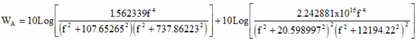
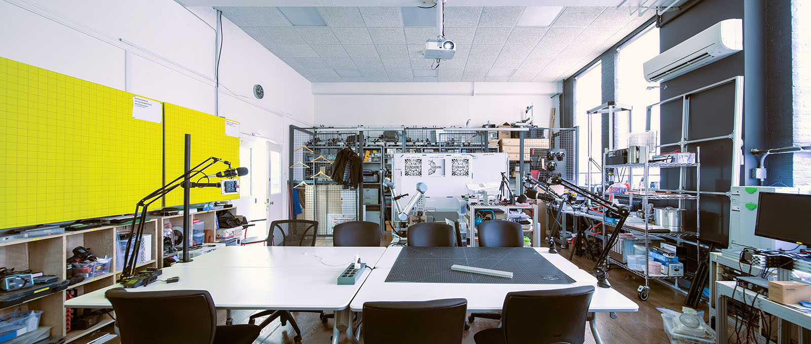
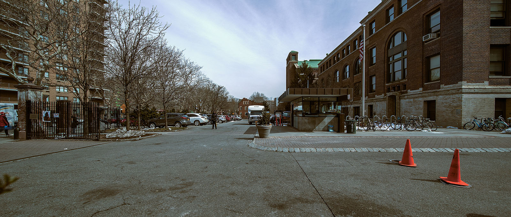

Premise
In accounting for acoustical properties of building materials, a single number Noise Reduction Coefficient (NRC) or Sound Transmission Class (STC) value is used by the industry as standard metric. Both value systems describe how well a material absorbs sound energy. While NRC focuses on the reflected sound, STC focuses on the transmitted sound, usually in the range of normal speech frequencies between 120 Hz to 4000 Hz 1
While NRC and STC are industry standards in understanding acoustical properties of building materials, in an age where offices have mostly adopted an open office layout where sound transmits freely, and with diversifying office culture where activities like desktop prototyping with CNC machines, doggy day care, and aerobic exercises can happen in the same space, these metrics are no longer adequate in assessing how our aural environments.
According to the National Institute on Deafness and Other Communication Disorders, long term exposure to sounds at or above 85 decibels can cause hearing loss 2. This metric to correlate sound pressure levels to hearing loss is, however, much too simplistic because it does not describe how different frequencies of sound affects our health differently. In a paper published in Environmental Health in 2014, researchers found high exposure to low frequency traffic noise at around 125 Hz may induce hypertension 3. Other researchers have also found significant associations between low frequency exposure to chronic diseases such as headaches, unusual tiredness, lack of concentration, irritation, and pressure on the eardrum 4.
In short, our evolving work environment and the increasing number of environmental health research are showing a deficiency in this single value system, and our proposal is to develop a more comprehensive view of noise and its interaction with space and materials.
What we propose is to go beyond the single value metric. Sound is a spectrum and human hearing is sensitive from 20Hz to 20kHz, therefore, we propose an acoustical standard that would allow us to gain a deeper insight into the nature of sound.
This proposal involve 2 stages of acoustical testing. The first is to record and graph environmental noise in and around our work environments. We want to record and profile noises of common equipments and how it differs from “background” noise. For the second phase, we will build an acoustical testing station to test and profile common and unusual acoustical materials.
Environmental Noise Recording Methodology
For sound recording, we are using a Zoom H1 Digital Recorder with 2 unidirectional microphone set at 90 degree to one another recording a wide sound field, and an Extech 407730- Digital sound level meter to record the sound pressure level (SPL) of the source, typically 1 meter away or as noted. If situation does not allow for the recording to be at 1 meter away, 2 meter distance is used and we use the Inverse Square Law, reduction of 6 decibel per meter, to adjust for the final value.
dL = 20 log (R2 / R1)
where:
dL = difference in sound pressure level (dB)
R1 = distance from source to location 1 (ft, m)
R2 = distance from source to location 2 (ft, m)
The sound pressure level is recorded with A-weighting on the instrument, which is weighted to human sound perception. The initial recordings recorded at about 36 locations profiling various kinds of noise, from single point source produced by a single machine, an omnisource produced by the extraction fan that is omnipresent, to background noise produced by foot and vehicular traffic.
We also referenced Health Link British Columbia 5 for typical noise types and their average decibels levels, and we established that around 50 dB is what a quiet work environment would be, high 70s dB can be irritating to people, and above 85 dB would be considered harmful if there is long term exposure.
Based on this information, we collated our recordings and profiled spaces that can serve as our baseline for what a quiet work environment would be, and spaces with frequent noise level above 75 dB.
| LOCATION | SOUND SOURCE | DISTANCE FROM SOURCE | SOUND LEVEL |
|---|---|---|---|
| ITL Office | 3D Printer | 1 m | 50.5 |
| ITL Office | Chop Saw | 2 m | 101.1 |
| Higgins Hall Lobby | Foot Traffic | ambient | 81.8 |
| Higgins Hall Main Staircase 1st Floor | Vending Machine | 1 m | 77.6 |
| Higgins Hall CNC Shop | CNC | 2 m | 107.8 |
| Higgins Hall South 3rd Floor Hallway | CNC + Foot Traffic | 1 m | 79.3 |
| Higgins Hall 3D Print Shop | Spray Booth Fan | 1 m | 81 |
| Main Campus Security Booth | Ambient Traffic | ambient | 75.1 |
| Pratt Career Center | Foot Traffic | ambient | 53 |
| Cafeteria | Foot Traffic | ambient | 79.3 |
| Engineering Wood Shop | Machinery | 1 m | 79.5 |
| Engineering Print Lab | Printers | 1 m | 77 |
| Engineering 1st Floor Hallway | Video | 2 m | 77.6 |
Data Processing Protocol
In addition to recording the sound pressure levels, the sound is also recorded as a sound file in .WAV 24bit / 96kHz format. The .WAV file is then brought into Audacity where we use its Fast Fourier Transform (FFT) algorithm to plot the spectrum. However, since Audacity’s spectral-graph is not weighted to human hearing, the data is exported out as a text file and then brought into Python to apply A-weighting with the following equation.
A-Weighting Equation 6

where:
WA = weighting to be applied, dB
f = frequency, Hz
A-Weighting Graph
This is the A-weighting graph generated from the equation above.
Unweighted Recording
This is the frequency spectrum graph straight from the audio recording.
A-Weighted Recording
This is the frequency spectrum with A-weighting applied to approximate human hearing.
Results
From the recordings, we established that the profile from the Pratt Career Center can be used as our normal quiet work environment baseline. The peak decibel level in that space is 53 dBA, well below normal conversation level, which is around 60 dB.
And as a comparison, this noise profile is from an even quieter office but with a 3D printer running. As you can see, the sound pressure level is lower mostly below 1 kHz and the increased noise level is mostly in the region of higher frequencies above 2 kHz. But the SPL reading shows a lower level at 50.5 dBA.

Location : ITL Office
Noise Source : 3D printer
Distance from Source : 1m
Max SPL : 50.5 dBA

Location : ITL Office
Noise Source : Point source chop Saw
Distance from Source : 2m
Max SPL : 101.1 dBA
Location : School of Architecture Higgins Hall Lobby
Noise Source : Ambient noise, conversation and foot traffic
Distance from Source : Ambient
Max SPL : 81.8 dBA

Location : School of Architecture Higgins Hall 1 Floor Seating Area by the Vending Machine
Noise Source : Ambient noise, conversation and foot traffic
Distance from Source : 1m to Vending Machine
Max SPL : 77.6 dBA

Location : School of Architecture Higgins Hall - CNC Shop
Noise Source : CNC Machine
Distance from Source : 1m
Max SPL : 107.8 dBA
Location : School of Architecture Higgins Hall - Hallway outside CNC Shop
Noise Source : CNC Machine + ambient foot traffic
Distance from Source : 1m from the door of CNC shop
Max SPL : 79.3 dBA
Location : School of Architecture Higgins Hall - 3D Print Shop
Noise Source : Spray Booth Fan
Distance from Source : 1m
Max SPL : 81 dBA

Location : Main Campus Security Booth
Noise Source : Ambient Traffic
Distance from Source : Ambient
Max SPL : 75.1 dBA

Location : Cafeteria
Noise Source : Ambient Traffic
Distance from Source : Ambient
Max SPL : 79.3 dBA
Location : Engineering Building Wood Shop
Noise Source : Machinery
Distance from Source : 1m
Max SPL : 79.5 dBA
Location : Engineering Building Print Lab
Noise Source : Printers
Distance from Source : 1m
Max SPL : 77 dBA

Location : Engineering Building 1st Floor Hallway
Noise Source : Video
Distance from Source : 2m
Max SPL : 77.6 dBA
Conclusion
From the recordings, we established that the profile from the Pratt Career Center can be used as our normal quiet
-
http://www.montana.edu/rmaher/eele417_fl14/Determination_of_STC.pdf ↩
-
https://www.nidcd.nih.gov/health/noise-induced-hearing-loss ↩
-
Chang, Ta-Yuan et al. “Road traffic noise frequency and prevalent hypertension in Taichung, Taiwan: a cross-sectional study” Environmental health : a global access science source vol. 13,1 37. 16 May. 2014, doi:10.1186/1476-069X-13-37 ↩
-
Persson Waye, Kerstin. (2011). Noise and Health - Effects of Low Frequency Noise and Vibrations: Environmental and Occupational Perspectives. 10.1016/B978-0-444-52272-6.00245-2. ↩
-
https://www.healthlinkbc.ca/health-topics/tf4173 ↩
-
http://www.diracdelta.co.uk/science/source/a/w/aweighting/source.html ↩